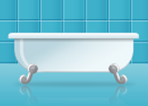

Наливная ванна
от 2000 руб.
ЗАКАЗАТЬРеставрация ванн действительно хороший вариант, когда смотреть на давно потерявшую свой первоначальный вид емкость уже нет сил, а заменить её нет желания или возможности. В зависимости от выбора материала для восстановления покрытия, вопрос об установке новой ванны может быть отложен на период от 3-х до 15-ти лет. Поэтому особенно вогдна для владельцев реставрация чугунной ванны. С такой "вечной" емкостью расстаться и впрямь жаль.
Остается решить пару вопросов: чем восстановить эмаль и кому доверить эту работу. Реставрация ванн своими рукаи - идея привлекательная. Но стоит посчитать выгоду. Итак...